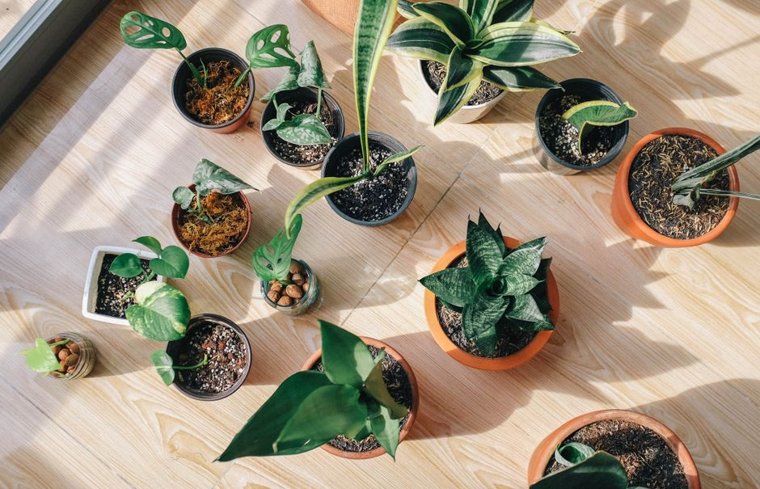

Ideal Indoor Plants for Beginners: A Comprehensive Guide

Photo: Huy Phan / Pexels
Beginners do best with forgiving plants that put up with a missed watering or imperfect light. Here are five reliable choices, with what you need to know about pet safety.
1. Spider plant (Chlorophytum comosum)
It likes bright, indirect light and evenly moist soil, and it produces small plantlets that are easy to propagate. It is generally considered non-toxic to cats and dogs, although eating a lot may upset their stomach.
2. Snake plant (Sansevieria)
Very tough, it tolerates low light and missed waterings. Let the soil dry out completely between waterings, every two to four weeks in many homes. It is toxic to cats and dogs if chewed.
3. Pothos (Epipremnum aureum)
A trailing or climbing plant that tolerates moderate light and roots easily in water. Water when the top inch of soil is dry. Pothos is toxic to cats and dogs, so hang it out of reach or choose another plant if your pet chews plants.
4. ZZ plant (Zamioculcas zamiifolia)
It stores water in its rhizomes and prefers infrequent watering. It tolerates low to medium light. It is toxic if chewed, and the sap can irritate skin, so wash your hands after handling it.
5. Peperomia
Small, decorative and easy, it likes bright indirect light and soil that dries a little between waterings. It is generally considered safe for cats and dogs.
Quick tips
- Choose a pot with a drainage hole.
- Water when the soil is dry on top, not on a fixed schedule.
- Avoid direct sun through glass unless the plant is a succulent.
Houseplants do not clean indoor air in any measurable way, so choose them for the pleasure of watching them grow. If a pet eats part of a plant, call your vet or a pet poison hotline right away rather than waiting for symptoms.
As an Amazon Associate, I earn from qualifying purchases.